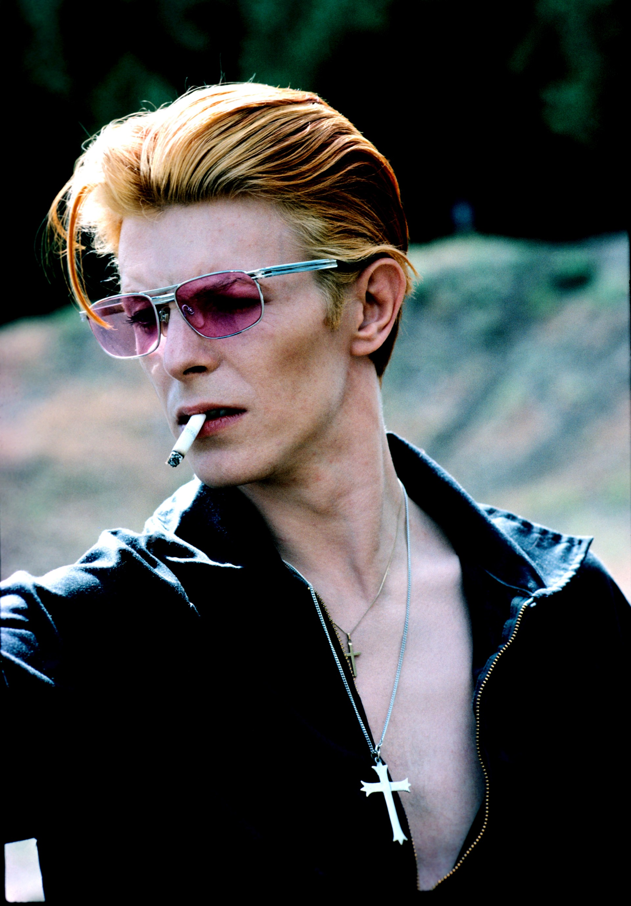

Glamorous. Futuristic. Alien. Mortal. You can never fully encapsulate the many faces of David Bowie.
Bowie’s fifty-year career is one of constant evolution, brilliant innovation, and enduring artistry. His legacy endures as one of a talent that defied form and a man who defied definition.
David Bowie was rock’s foremost futurist and a genre-bending pioneer, chameleon and transformer. Throughout his solo career and in his alliances with other artists—including Lou Reed, Iggy Pop, Brian Eno and Nine Inch Nails—Bowie has positioned himself on the cutting edge of rock and roll. His innovations created or furthered several major trends in rock and roll, including glam-rock, art-rock and the very notion of the self-mythologized, larger-than-life rock star.
The London-born Bowie entered the music scene via a series of short-lived British bands in the mid-Sixties—among them, the Manish Boys and the Lower Third—before embarking on a solo career in 1966. He released the moody, existential “Space Oddity” in 1969—the year America landed a man on the moon. On the strength of such early albums as Man of Words/Man of Music (1969) and The Man Who Sold the World (1970), Bowie became a cult figure to rock fans looking for something new and challenging to fill the post-Sixties void. A driven, polymorphic artist who breaks all the molds, Bowie has attracted attention from the beginning for his frequent, fascinating changes of guise and the high quality of his unpredictable music. “I’m the last one to understand the material I write,” Bowie once protested. But it surely has always had something to do with imagining and moving forward into the future.
Bowie’s breakthrough came with The Rise and Fall of Ziggy Stardust and the Spiders from Mars (1972), a thoroughly modern album that promulgated the notion of rock star as space alien. Bowie melded rock with theater, creating the provocative character and alter ego Ziggy Stardust. Flirting with decadence and embracing theatricality like no rock and roller before him, Bowie erupted from cult figure to rock icon in Ziggy’s wake. He dressed the part of the flamboyant “starman,” affecting costumes that fused British mod and Japanese kabuki styles. Rainbow-hued knit body suits, metallic bomber jackets, space-samurai outfits, white satin kimonos, and see-through mesh tops were among the fanciful threads worn by Bowie in the guise of Ziggy Stardust and his successor, the paranoid androgyne Aladdin Sane. Boasting sharp, propulsive music from the Spiders from Mars—which included the late guitarist Mick Ronson—The Rise and Fall of Ziggy Stardust and the Spiders from Mars and its followup, Aladdin Sane (1973), heralded a paradigm shift in the early Seventies. Bowie also displayed his affection for the mod “London underground” of the mid-to-late Sixties with Pin Ups (1973), an album of cover songs by the Pretty Things, Pink Floyd, Them and other hitmakers of the day.
During the Seventies, Bowie pioneered and embodied the notion of rock style. For much of the decade he projected a calculating aloofness, and many wondered where the characters ended and the “real Bowie” began. “Bowie’s conceit is to treat human feeling as technology and technology as feeling,” wrote music critic Tom Carson. In the mid-to-late Seventies, however, Bowie took refuge from fame—and a drug problem—in Berlin, where he embarked on a fruitful union with producer Brian Eno (though the albums were produced by Tony Visconti) that resulted in the celebrated Berlin Trilogy: three largely experimental, atmospheric albums on which Bowie reinvented himself yet again. With Low (1977), Heroes (1977) and Lodger (1979), Bowie peeled away his masks while creating music that anticipated the ambient and industrial soundscapes of the coming decades.
In 1980, Bowie released Scary Monsters, which summed up and closed the door on the previous decade. The album even cast a final nod to Bowie’s “Major Tom” character from “Space Oddity” with the sequel “Ashes to Ashes.” Moving into theater, Bowie worked on Broadway for four months in 1980, garnering rave reviews for his portrayal of John Merrick in the lead role of The Elephant Man. Musically, Bowie’s commercial masterstroke came in 1983 with Let’s Dance, an accessible set of modern-minded dance music that gave Bowie his second Number One hit with the brassy, swaggering title track, as well as “China Girl” (Number Ten) and “Modern Love” (Number Fourteen). That same year, the D.A. Pennebaker-produced film documentary of Bowie’s final tour from the Ziggy days, Ziggy Stardust: The Motion Picture, was released.
Admittedly, Bowie didn’t dominate and define the Eighties as he did the Seventies. However, he released intermittent albums (Tonight in 1984 and Never Let Me Down in 1987) and collaborated with the likes of Queen, Mick Jagger, Bing Crosby and the Pat Metheny Band while further pursuing his lifelong interest in alternate media, including film, theater and painting. In 1989, the Ryko label reissued Bowie’s back catalog—from Space Oddity through Scary Monsters, as well as singles compilations and a spectacular box set, Sound + Vision. Bowie supported the reissue program with the Sound + Vision Tour, during which he performed a largely retrospective repertoire for what he claimed would be the last time. He also formed a band, Tin Machine, submerging his ego as an equal member of this edgy, hard-rocking entity. Tin Machine didn’t enjoy the commercial or critical acclaim of Bowie’s solo works, but the very idea of Bowie as a bandmate spoke intriguingly of his more human-scaled prerogatives at middle age.
During the Nineties, Bowie returned to pushing the envelope as never before while also moving into the most settled phase of his personal life. On April 24th 1992, Bowie married the Somalian model Iman at a civil ceremony in Lausanne, Switzerland. He commemorated the event with “The Wedding,” from the 1993 album Black Tie White Noise. Subsequently, Bowie embarked on a startlingly ambitious and uncompromising series of albums. The unsettling Outside (1995) was a self-described “non-linear Gothic Drama Hyper-cycle” based on characters from a Bowie short story. The accompanying tour found him joined by the extremist electronic act Nine Inch Nails. In 1997, Bowie released Earthling, an album that showed the influence of the underground dance-music scene on Bowie (and vice versa). A year later, he was the first rock star to launch his own internet service provider, BowieNet. The autobiographical, angst-filled studio album Hours appeared in 1999, providing mortal musings from Bowie on the eve of the new millennium.
Bowie remained an important, cutting-edge artist into the 21st Century. In October 2001, he opened the Concert for New York City, a tribute to the victims of the September 11 attacks. The following year, he released the album Heathen; and one year later, in 2003, Reality. In 2006, he received a Grammy Lifetime Achievement Award. On January 8, 2013, Bowie released his first single in a decade, "Where Are We Now?," coinciding with his 66th birthday. His The Next Day (2013) album followed, his first new studio album in a decade.
As critic Brad Filicky wrote, “Bowie has become known as a musical chameleon, changing and dictating trends as much as he has altered his style to fit, influencing fashion and pop culture.” David Bowie passed away on January 10, 2016, just two days after his 69th birthday and the release of his critically acclaimed album Blackstar.
Inductee: David Bowie (vocals, guitar, saxophone, keyboards; born January 8, 1947, died January 10, 2016)